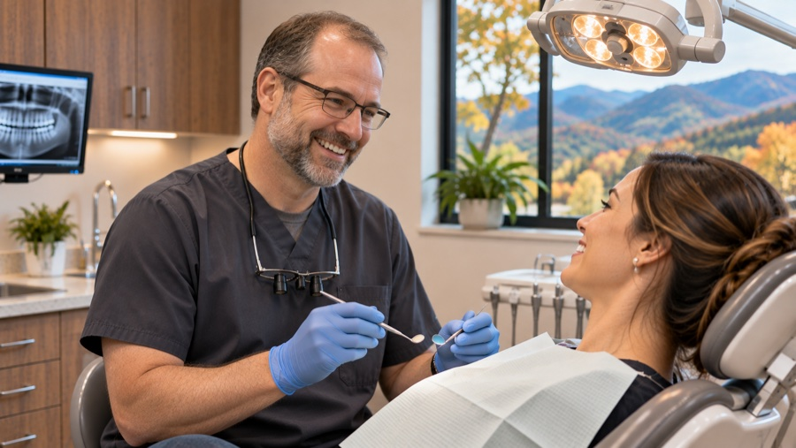
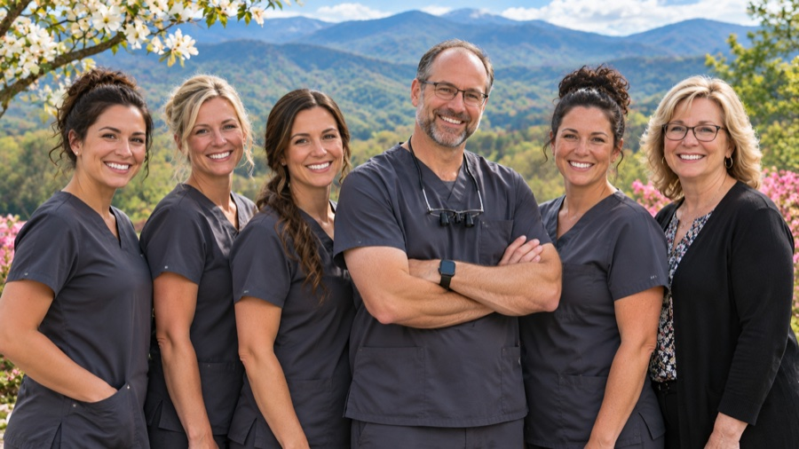

Emergency care for travelers
Same-day emergency visits
Toothaches, broken or chipped teeth, lost fillings or crowns, and swelling. Call and we'll fit you in as soon as we can.
Out-of-town patients welcome
We send records and X-rays to your home dentist so your care continues after your trip.
Services
Same-day crowns made in-house
Digital scans and an in-office milling unit mean many crowns are designed, made and placed in one visit.
Modern digital equipment
Digital X-rays, 3D imaging and intraoral cameras let you see what we see.
Family dentistry
Cleanings, exams, fillings and preventive care for all ages.
Insurance
We accept most major PPO dental insurance plans and file claims for you. Uninsured visitors receive clear pricing before treatment.
About Dr. Brooks
Dr. Daniel Brooks is a general dentist who grew up in East Tennessee. He opened Summit Ridge Dental to serve both his neighbors and the visitors who come to enjoy the mountains.
Our practice


Contact
Dr. Daniel Brooks, DDS, General Dentist
Phone: (865) 555-0128 · Email: care@summitridgedental.example
Serving Pigeon Forge, Sevierville, Gatlinburg and visitors to the Great Smoky Mountains.
Hours: Monday–Saturday 8 AM–6 PM · Sunday 10 AM–2 PM (emergencies)